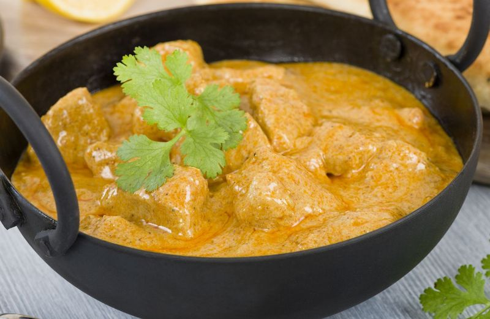

Indian Chicken Curry Recipe
Ingredients
- 8 bone-in chicken breast halves, skinless
- 1 (15 ounce) can tomato sauce
- salt and pepper to taste
- 1 (10 ounce) can coconut milk
- 1 tablespoon olive oil
- 4 whole cloves
- 2 onions, peeled and quartered
- 4 pods cardamom
- 1 teaspoon finely chopped fresh ginger root
- 1 cinnamon stick
- 1 teaspoon crushed garlic
- salt to taste
- 1 tablespoon hot curry powder
Instructions
- Step 1
- Rinse chicken and pat dry; season with salt and pepper to taste.
Heat oil in a large frying pan over medium high heat, then saute chicken until browned.
Remove chicken from frying pan and set aside. - Step 2
- Saute onions in frying pan until translucent; add ginger and garlic and saute until fragrant, then stir in curry powder.
- Step 3
- Return chicken to frying pan and add tomato sauce, coconut milk, cloves, cardamom and cinnamon stick.
Season with salt to taste and stir all together. - Step 4
- Reduce heat to low and simmer until chicken is tender and cooked through (no longer pink inside), about 20 to 25 minutes.
- Step 5
- Now ready to eat and taste :)

| Contact Us | Follow Us |
| Phone Number:09421018986 Email:foodparadise@gamil.com |
Copyright © 2017,Food Paradise. All Rights Reserved.